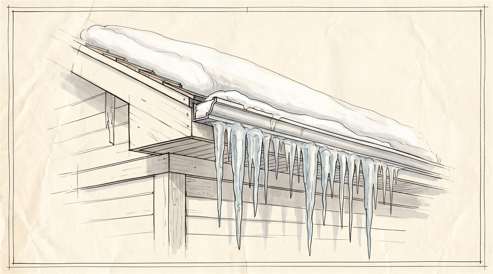
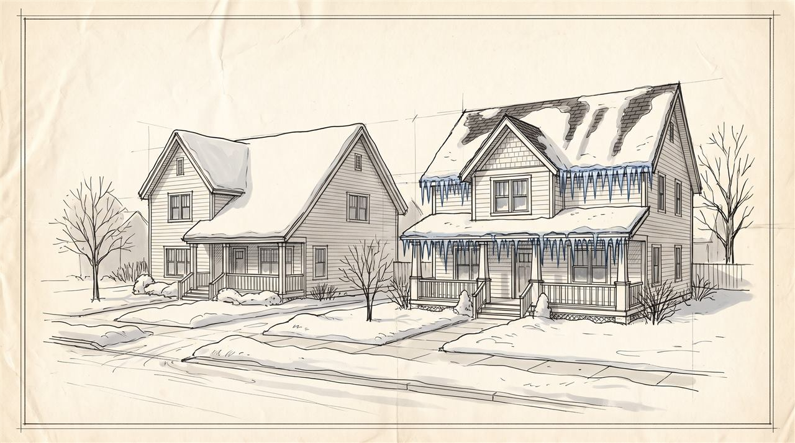
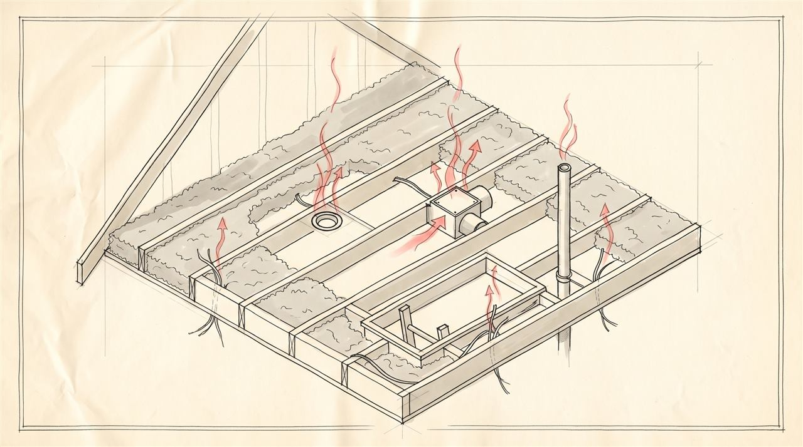
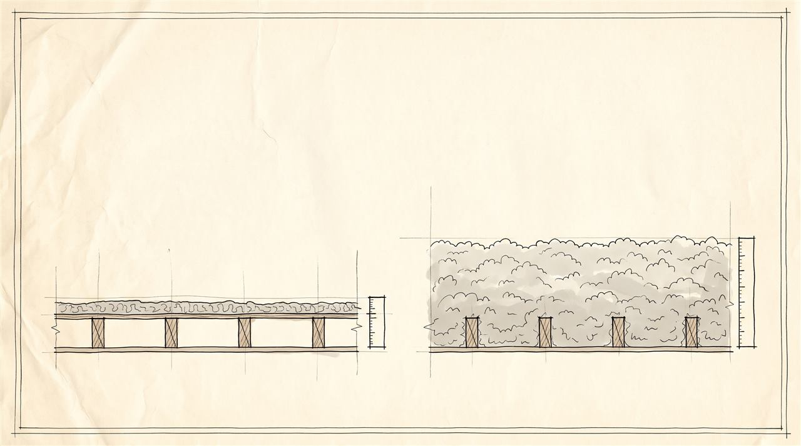
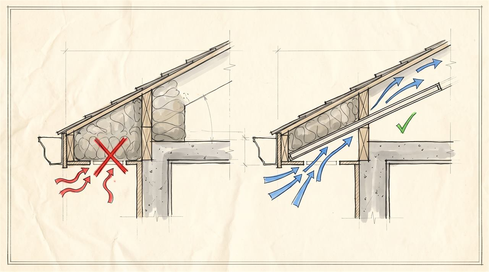
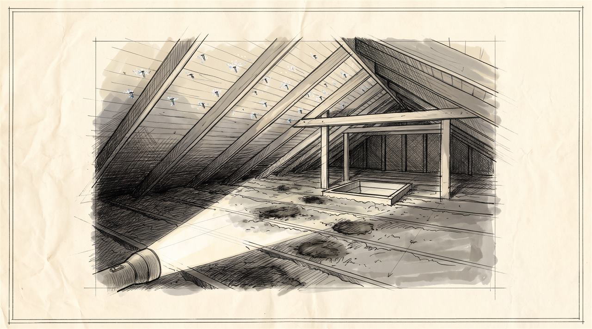

Those icicles are costing you money: why ice dams start in the attic, not the roof
Every winter people post pictures of their icicles like they're something to be proud of. They're not. A row of big icicles on your gutter is a sign that your house is heating the roof, and heat on your roof is heat you paid for.
Here's the part most people get wrong. Ice dams aren't a roof problem. They start in the attic. Call a roofer and you'll get a new roof that does the same thing next winter. If you live anywhere it snows, and especially if your house was built before the 1990s, here is how an ice dam forms, where the heat is sneaking out of your house, and the fixes in the order that actually works.

How an ice dam forms
Start with a roof covered in snow. On a cold day, say ten degrees outside, that snow should just sit there.
But the attic underneath isn't ten degrees. Warm air from the house is leaking up into it, and heat is soaking through the ceiling. So the attic is thirty-five, forty degrees. That warms the roof deck from below, and the bottom layer of snow starts to melt, even though it's freezing outside.
That water runs down the roof, under the snow, until it reaches the eave. And the eave is the one part of the roof that's not over the warm attic. It hangs out past the wall, over the cold outdoors. So the water hits that cold edge and freezes.
Do that every day for a few weeks and you build a ridge of ice along the edge of the roof. That's the dam. Now the melt water coming down behind it has nowhere to go. It pools.
Shingles are built to shed water running downhill. They are not built to hold back a pond. So the water backs up under the shingles, through the roof deck, and into your wall or ceiling. That's the brown stain in the corner of an upstairs bedroom in February. The icicles are just the overflow.
What it's actually costing you
Every bit of snow melting on your roof was melted by heat from your furnace. You're paying to heat the outdoors.
You can see it from the street. The morning after a snowfall, look at the roofs on your block. A well-insulated house keeps an even blanket of snow for days. A leaky one shows bare patches, melted stripes, and a crown of icicles. Same street, same weather, very different heating bills.
And the leak isn't small. ENERGY STAR puts the typical savings from sealing air leaks and adding insulation, mostly in the attic, at around fifteen percent of a home's heating and cooling costs. In an older house in a cold climate it can be a lot more. That's the money the icicles are pointing at.
Then there's the damage. A leaking ice dam can soak insulation, rot the roof deck, stain ceilings, and grow mold inside walls where you won't see it until spring.

Where the heat gets in
Heat gets into an attic three ways. Fix them in this order, because the order matters.
One: air leaks. This is the big one, and the one people skip. Warm air rises, and your house is full of holes in its ceiling: recessed lights, the bathroom fan, plumbing pipes and wires coming up through the top of the walls, the chimney chase, the attic hatch itself. Each one is small. Together they can add up to the same as leaving a window open all winter. And that warm air carries moisture, which turns to frost on the underside of your roof.

Two: not enough insulation. A lot of older houses have six inches or less up there, sometimes less than that, packed down and dirty after decades. Current code for new homes in Minnesota calls for at least R-49, which is roughly fifteen to eighteen inches of blown insulation (as of 2026). If you can see the tops of your ceiling joists, you don't have enough. The calculator at the top of this page turns your depth and insulation type into an R-value and tells you how many inches to add.

Three: ventilation. A cold attic needs outdoor air moving through it: in at the soffits, under the eave, and out at the ridge or roof vents. That keeps the roof deck close to the outdoor temperature. The common mistake is insulation stuffed right up into the eave, blocking the soffit vents. The fix is a baffle, a simple foam or cardboard channel that holds the insulation back and keeps the air path open.

Why that order? Because if you pile insulation on top of air leaks, the warm air flows up through the fluffy insulation like it isn't there. And ventilation can't keep up with a house that's pumping heat into the attic. Seal first. Then insulate. Then make sure it can breathe.
What to do this winter, and what not to do
You can't fix an attic in a snowstorm, so start with the roof you have.
A roof rake is fine. It's a long-handled scraper you use from the ground to pull the snow off the bottom three or four feet of roof. No snow on the edge, no melt water to refreeze. It's cheap and it works. Stay on the ground, and watch for power lines.
Don't chip the ice off with a hammer or an axe. You'll tear up the shingles and gutters, and you're on a ladder over ice.
Heat cables, the zigzag wires along the roof edge, will melt a channel for the water to escape. They can save you from a leak. But they don't fix anything. They run on electricity all winter to treat a heat leak with more heat. Think of them as a band-aid, not a cure.
When you replace the roof, make sure it gets ice and water shield along the eaves. That's a rubbery membrane under the shingles at the edge, and in Minnesota code requires it from the edge to at least two feet inside the wall line (as of 2026). It won't stop an ice dam from forming, but it stops the water from getting into the house when one does.
The real fix is in the attic, and you can see it yourself
On a cold day, go up with a flashlight. The attic should feel close to the temperature outside. If it feels warm, heat is getting in. Look at the insulation. Dark, dirty patches mean air has been flowing through it for years, and the insulation has been filtering it like a furnace filter. Those are your leaks. Look up at the roof deck. Frost on the nail tips means warm, moist air is reaching it.

Air sealing is a reasonable weekend project for a handy homeowner: foam and caulk around the pipes and wires, a sealed cover over the hatch. Adding insulation and fixing the eaves is usually a job for an insulation contractor. Start with an energy audit. That's what I did on my own house this spring. A home energy review found the leaks, an approved contractor did the work, and a utility rebate paid for part of it. Most utilities in cold states run a program like that, so check yours before you hire anyone.
Your one thing this week
After the next snowfall, walk out to the street the next morning and look at your own roof. Even white, you're in decent shape. Bare patches, melted stripes, or a crop of icicles: that's your heat leak. Then go up in the attic and look for the dirty insulation.
And if you only do one thing before winter really hits, weatherstrip and insulate the attic hatch. It's often the single biggest hole in the ceiling, and it costs about twenty dollars to fix.
Things that help (paid links)
As an Amazon Associate I earn from qualifying purchases.
General education, not an inspection. Every house is different; check with a qualified contractor or energy auditor before making changes to your attic. The narration in the video is a synthetic clone of the author's voice.